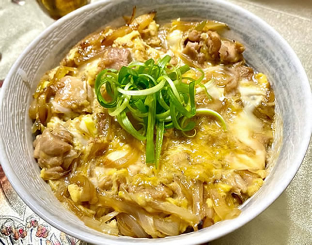
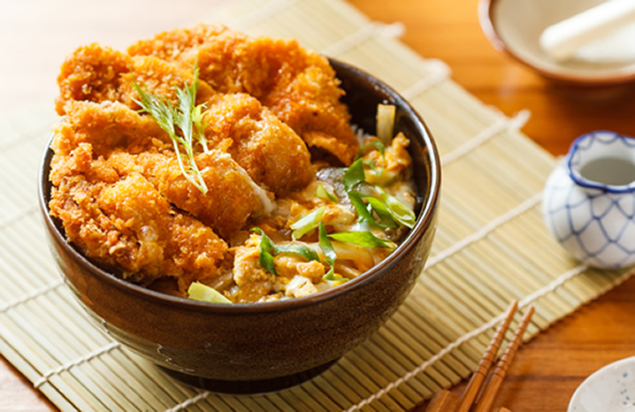
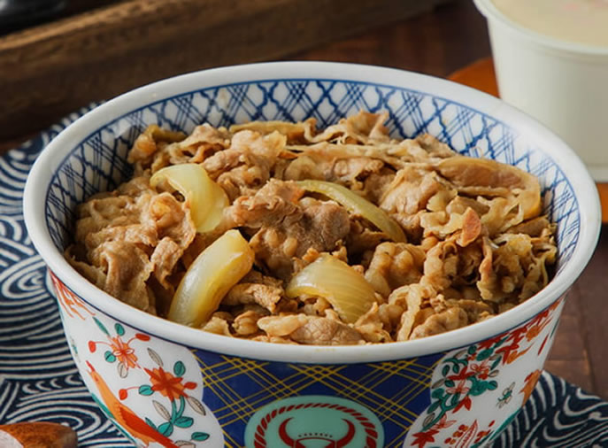
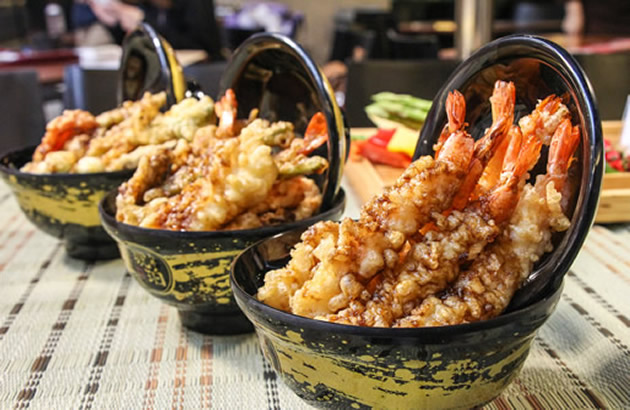

鰻 丼
鰻魚飯（日語：鰻丼），是一種日本丼物、典型的日本料理，
主要是將蒲燒鰻魚置於盛裝米飯的日本餐具內食用。
這被認為是來自於江戶的鄉土料理，屬於日本料理的一種。
在日本，可以分為鰻魚盒飯（鰻重）與鰻魚碗飯（鰻丼），
區別僅為一種用木盒盛放而另一種用瓷碗。食用前可以撒上七味粉提香。
丼物，多簡稱為丼，是對於蓋澆飯類之日本料理的通稱，通常以較大尺寸的碗盛裝米飯並蓋上魚肉、肉類、蔬菜或者其他燉煮料理而成。
| 親 子 丼 | 豬 排 丼 | 牛 丼 | 天 丼 | 鰻 丼 | 海 鮮 丼 |

親 子 丼
親子丼，又稱滑蛋雞肉飯，是日本的一種米食類料理。主要食材是雞肉和雞蛋，故稱為親子丼。
若同時包含魚肉與魚卵的丼物也稱為「海鮮親子丼」，如「鮭魚親子丼」。
親子丼由一間叫「玉ひで」的餐廳開始，本是販售「軍雞鍋」（鬥雞鍋），也就是將雞肉煮熟後，再淋上蛋汁一起食用的料理。
當時日本的雞蛋價格非常昂貴，客人認為若因軍雞鍋吃不完而丟棄是很浪費的事，所以就把剩下的料理和白飯拌在一起食用，
沒想到味道相當可口，來店的客人與日遽增，一直到第五代老闆上任後，才正式將雞肉覆蓋蛋汁，再淋在飯上來銷售，並命名為親子丼。

豬 排 丼
豬排丼是日本料理中將雞蛋放置在豬排飯上的丼物，也可以將雞蛋取代為日式豬排醬。
在日本刑事劇當中，經常會看到在警局詢問嫌犯的時候，警察會請老實坦白的犯人吃豬排丼。
該橋段最早出現於1955年的電影《警察日記》。

牛 丼
牛丼，或稱為日式牛肉飯，是一種日式速食食品，是一種丼物。
主要做法是在碗內盛上米飯後，上鋪一層碎牛肉片和洋蔥絲，並一起蒸熟後食用，食用時可配以醃製的洋薑絲。
由於食用方便，故廣受上班族的歡迎。
明治維新時期，日本人大舉學習歐美世界之科技與習俗，其中歐美人種食用牛肉的風氣亦因此傳入日本。
最初的牛丼則是在關東地區誕生的。

天 丼
所謂的天丼，意思就是「炸物蓋飯」，常見的有蝦子、白肉魚、香菇、茄子、四季豆…等等食材，
等到每樣食物都炸得金黃酥脆之後，再蓋在白飯上一同享用。
因此如何讓各項炸物吃起來清爽不油膩、保有原本的滋味與水分，就決定了天丼美味的程度。
鰻 丼
鰻魚飯（日語：鰻丼），是一種日本丼物、典型的日本料理，
主要是將蒲燒鰻魚置於盛裝米飯的日本餐具內食用。
這被認為是來自於江戶的鄉土料理，屬於日本料理的一種。
在日本，可以分為鰻魚盒飯（鰻重）與鰻魚碗飯（鰻丼），
區別僅為一種用木盒盛放而另一種用瓷碗。食用前可以撒上七味粉提香。